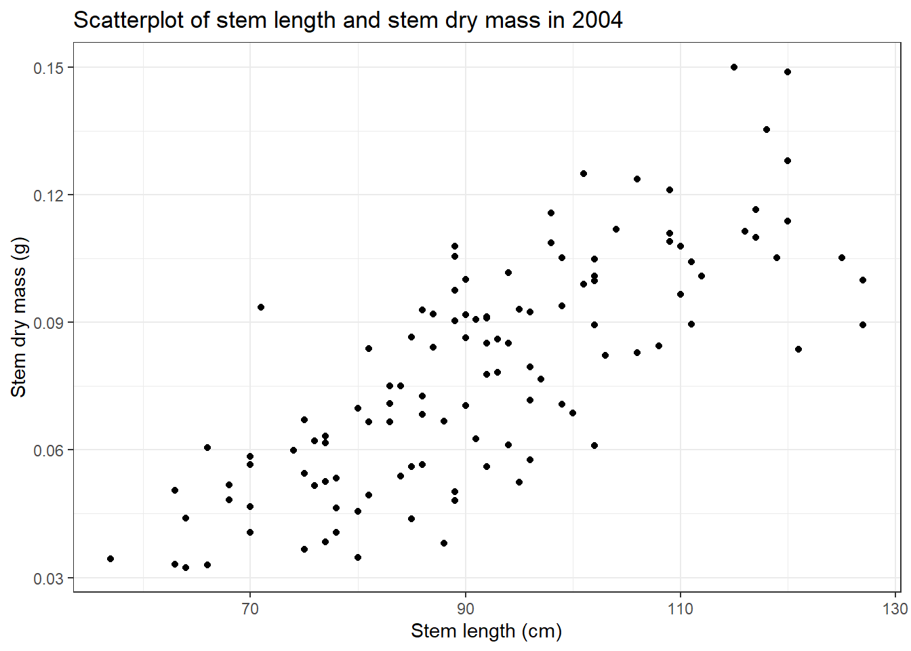
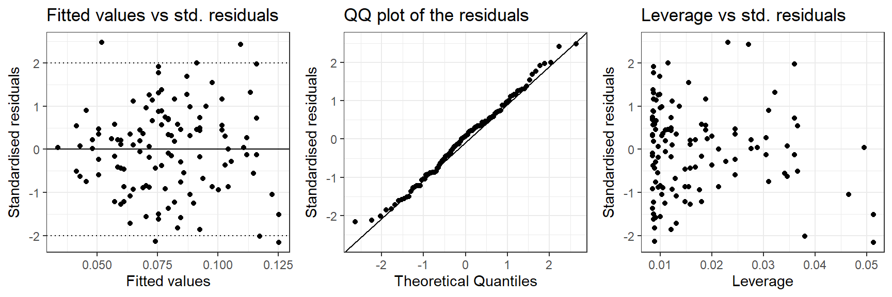
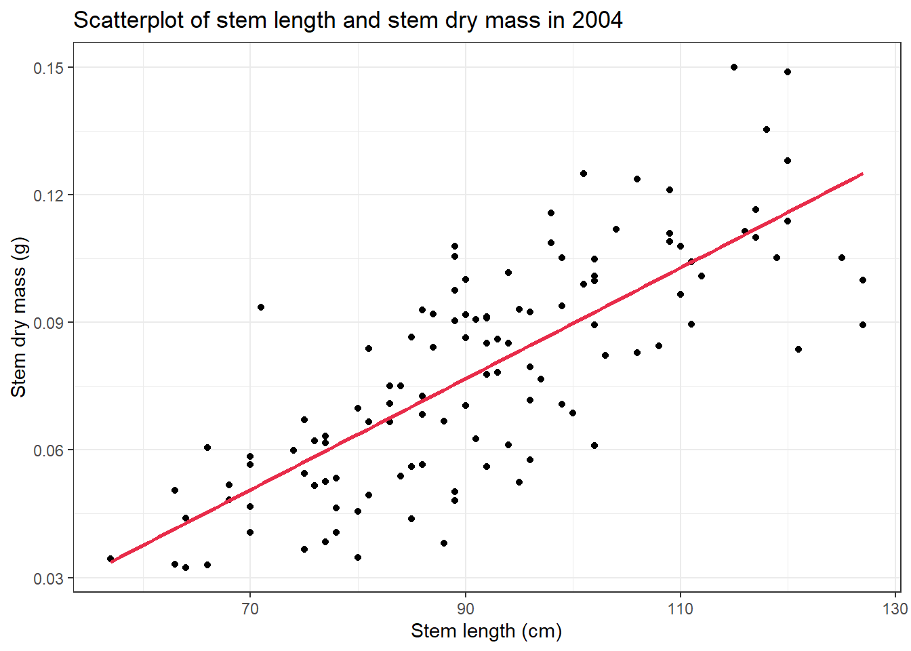
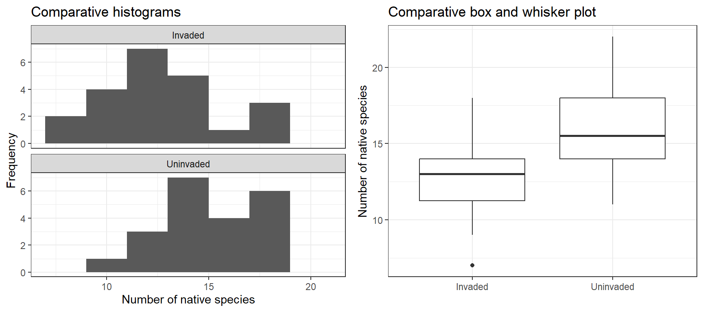
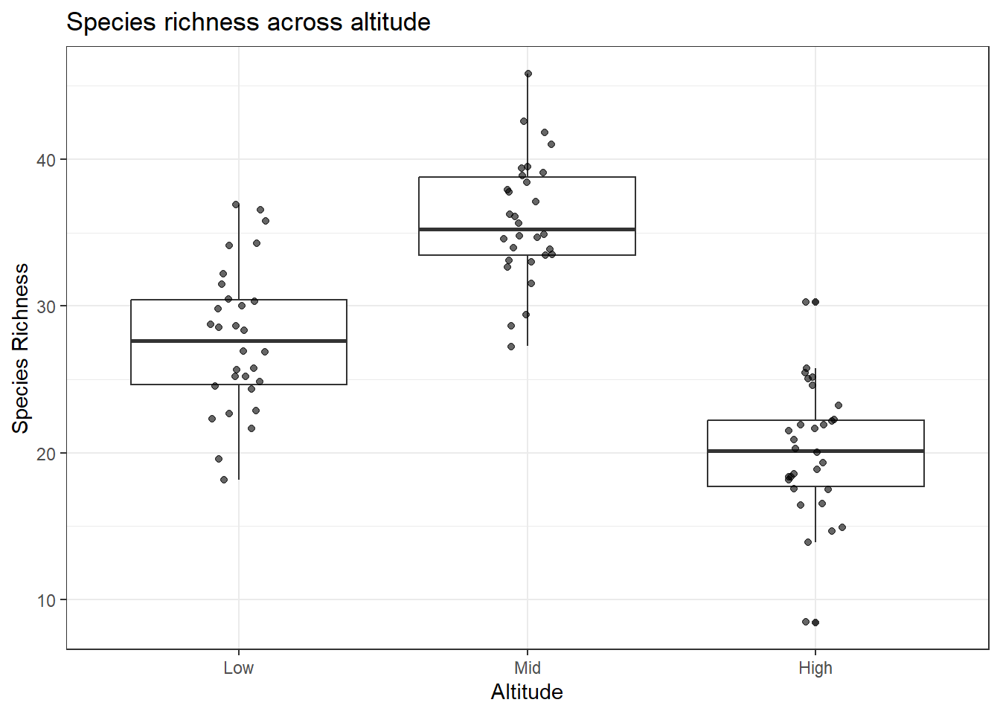

# install.packages("broom") To install broom package if not installed.
## bring the libraries into R
library(tidyverse)
library(cowplot)
library(broom)
# Load data
plant_test_data <- read_csv("https://raw.githubusercontent.com/nicholaswunz/ECS200-Workshop/refs/heads/main/data/plant_calcium_task.csv") %>%
dplyr::mutate(watershed = recode(watershed, "W2" = "W1"),
watershed = as.factor(watershed),
transect = as.factor(transect)) %>%
dplyr::filter(stem_dry_mass < 1 & year == 2004)5 Statistical Inference
Week 5 - A refresher of regression, two independent samples t-test and one-way ANOVA
In this workshop, you will review three statistical inference techniques used in analysing simple data sets. These methods are simple regression with a single numeric (and preferably) continuous explanatory variable, the two independent samples t-test and one-way ANOVA.
Workshop materials are available in the github repository ECS200.

Today’s task will be a refresher on the following:
- Regression
- Two independent samples t-test
- One-way ANOVA
For each, you will need to understand about intercepts, slopes, p-values, assumptions of equal variances, assumptions of independence, and assumptions that the residuals have a normal distribution.
Background
Is your data linear?
This app below fits a straight-line (ordinary least squares) regression to simulated data using the lm() function (lm(y ~ x, data = mydata)), and displays three diagnostic plots to help you judge whether that line is an appropriate summary of the relationship.
You can choose from five data patterns - linear up, linear down, curved up, curved down, and fan-shaped
You can toggle residual lines on or off. Pressing Resample generates a fresh dataset from the same pattern so you can see how much the plots vary by chance.
The diagnostic plots:
- Scatter plot with the fitted regression line (and optional residuals)
- Residuals vs. Fitted — should show no pattern if the linear model fits. Patterns (e.g., curves) suggest model misspecification, such as non-linearity (e.g. try curve up or curve down). Points far from zero indicate large residuals (potential outliers). Clusters or structure imply the model is not capturing systematic variation.
- Normal Q-Q — checks whether residuals follow a normal distribution. Systematic deviations (S-shape or heavy tails) indicate non-normal residuals. Extreme points far from the line suggest outliers or influential observations. Departures mainly at the ends indicate issues in the tails rather than the center.
How to use
- Select a trend from the radio buttons on the left.
- Toggle Show residuals to see how far each point sits from the line.
- Press
Resampleto draw a new dataset and observe natural sampling variation. - Compare the two diagnostic plots to the ideal (random scatter, straight Q-Q line).
#| '!! shinylive warning !!': |
#| shinylive does not work in self-contained HTML documents.
#| Please set `embed-resources: false` in your metadata.
#| standalone: true
#| viewerHeight: 700
library(shiny)
library(bslib)
# ---------------------------
# Data generator
# ---------------------------
draw.data <- function(type) {
n <- 250
if (type == "linear.up") {
x <- c(runif(n-2, 0, 4), 2, 2.1)
y <- 2*x + rnorm(n, sd=2)
}
if (type == "linear.down") {
x <- c(runif(n-2, 0, 4), 2, 2.1)
y <- -2*x + rnorm(n, sd=2)
}
if (type == "curved.up") {
x <- c(runif(n-2, 0, 4), 2, 2.1)
y <- 2*x^4 + rnorm(n, sd=16)
}
if (type == "curved.down") {
x <- c(runif(n-2, 0, 4), 2, 2.1)
y <- -2*x^3 + rnorm(n, sd=9)
}
if (type == "fan.shaped") {
x <- seq(0, 3.99, 4/n)
y <- c(rnorm(n/8,3,1), rnorm(n/8,3.5,2), rnorm(n/8,4,2.5),
rnorm(n/8,4.5,3), rnorm(n/4,5,4), rnorm((n/4)+2,6,5))
}
data.frame(x=x, y=y)
}
# ---------------------------
# UI
# ---------------------------
ui <- pageWithSidebar(
headerPanel(""),
sidebarPanel(
radioButtons("type", "Select a trend:",
list("Linear up" = "linear.up",
"Linear down" = "linear.down",
"Curved up" = "curved.up",
"Curved down" = "curved.down",
"Fan-shaped" = "fan.shaped")),
br(),
checkboxInput("show.resid", "Show residuals", FALSE),
br(),
actionButton("resample", "Resample", class = "btn-primary", style = "background-color: #e82c4a"),
br()
),
mainPanel(
plotOutput("scatter"),
br(),
br(),
plotOutput("residuals")
)
)
# ---------------------------
# SERVER
# ---------------------------
server <- function(input, output) {
mydata <- reactive({
input$resample # dependency trigger
draw.data(input$type)
})
lmResults <- reactive({
lm(y ~ x, data = mydata())
})
# ---------------------------
# Scatter plot with regression line, CI, PI, optional residuals
# ---------------------------
output$scatter <- renderPlot({
data1 <- mydata()
x <- data1$x
y <- data1$y
xcon <- seq(min(x) - 0.1, max(x) + 0.1, 0.025)
predictor <- data.frame(x = xcon)
yhat <- predict(lmResults())
yline <- predict(lmResults(), predictor)
newx <- seq(min(x), max(x), length.out = 200)
confs <- predict(lmResults(), newdata = data.frame(x = newx),
interval = "confidence")
preds <- predict(lmResults(), newdata = data.frame(x = newx),
interval = "predict")
r.squared <- round(summary(lmResults())$r.squared, 4)
corr.coef <- round(sqrt(r.squared), 4)
par(cex.main = 1.2, cex.lab = 1.2, cex.axis = 1.2, mar = c(4,4,4,1))
plot(c(min(x), max(x)),
c(min(y, yline), max(y, yline)),
type = "n",
xlab = "x", ylab = "y",
main = paste0("Regression Model\n",
"(R = ", corr.coef, ", R-squared = ", r.squared, ")"))
# Prediction interval band (lighter)
polygon(c(rev(newx), newx),
c(rev(preds[, 3]), preds[, 2]),
col = grey(0.95), border = NA)
# Confidence interval band (darker)
polygon(c(rev(newx), newx),
c(rev(confs[, 3]), confs[, 2]),
col = grey(0.75), border = NA)
points(x, y, pch = 19, col = "#e82c4a")
lines(xcon, yline, lwd = 2, col = "black")
# Optional residual lines
if (input$show.resid)
for (j in seq_along(x))
lines(rep(x[j], 2), c(yhat[j], y[j]), col = "#e82c4a")
legend_pos <- ifelse(lmResults()$coefficients[1] < 1, "topleft", "topright")
if (input$type == "linear.down") legend_pos <- "topright"
if (input$type == "fan.shaped") legend_pos <- "topleft"
legend(legend_pos, inset = 0.05,
legend = c("Regression Line", "Confidence Interval", "Prediction Interval"),
fill = c("black", grey(0.75), grey(0.95)))
box()
})
# ---------------------------
# Diagnostic plots: residuals vs fitted, histogram, Q-Q
# ---------------------------
output$residuals <- renderPlot({
residuals <- summary(lmResults())$residuals
predicted <- predict(lmResults(), newdata = data.frame(x = mydata()$x))
par(mfrow = c(1,2), # two plots appear side by side
cex.main = 1.2, # plot title 1.5 times larger
cex.lab = 1.2, # x and y labels 1.5 times larger
cex.axis = 1.2, # axis numbers 1.5 times larger
mar = c(4,5,2,2)) # Sets plot margins (in lines of text) in the order: bottom, left, top, right.
# Residuals vs Fitted
plot(residuals ~ predicted,
main = "Residuals vs. Fitted Values",
xlab = "Fitted Values", ylab = "Residuals",
pch = 19, col = "#e82c4a")
abline(h = 0, lty = 2, col = "black")
# Histogram of residuals with density overlay
#d <- density(residuals)
#h <- hist(residuals, plot = FALSE)
#hist(residuals,
# main = "Histogram of Residuals", xlab = "Residuals",
# col = "#569BBDC0", prob = TRUE,
# ylim = c(0, max(max(d$y), max(h$density))))
#lines(d, col = "#569BBD", lwd = 2)
# Normal Q-Q plot
qqnorm(residuals, pch = 19, col = "#e82c4a",
main = "Normal Q-Q Plot of Residuals")
qqline(residuals, col = "black", lwd = 2)
}, height = 250)
}
shinyApp(ui = ui, server = server)
Model Assumptions
We will include two more diagnostic plot on top of the Residuals vs. Fitted, and Normal Q-Q, which is called the Scale-Location plot which checks for unequal spread (heteroscedasticity), and Leverage plot which visualises how unusual a point’s x-value is relative to the rest of the data.
In this app below, a single red point sits among a cloud of black data points. You can click anywhere on the scatter plot to move the red point and instantly see how the fitted regression line responds. Three standard diagnostic plots update in real time so you can watch leverage and influence change as you drag the point to different positions.
The additional diagnostic plots:
- Scale-Location: Look for constant spread. A funnel (increasing spread) indicates heteroscedasticity (non-constant variance). Horizontal banding is ideal. If variance increases with fitted values, model assumptions are violated.
- High leverage + large residual = influential. Leverage threshold = 2 × mean leverage ≈ 0.068. Leverage reflects how extreme a point is in x-space. High leverage alone is not problematic unless paired with a large residual. Points with high leverage and large residuals are most concerning.
How to use
- Set the sample size with the slider and press
Resamplefor a new dataset. - Click anywhere on the left-hand scatter plot to move the red point.
- Choose a diagnostic plot from the radio buttons to see how that measure changes.
- Switch between fitting the model to all data (red point included) or black points only to compare the two fitted lines.
#| '!! shinylive warning !!': |
#| shinylive does not work in self-contained HTML documents.
#| Please set `embed-resources: false` in your metadata.
#| standalone: true
#| viewerHeight: 600
# ---------------------------
# Data generator
# ---------------------------
generate_data <- function(n) {
x <- 1:n
y <- x + rnorm(n, sd = n / 4)
colour <- rep("black", n)
x <- c(x, mean(x))
y <- c(y, mean(y))
colour <- c(colour, "#e82c4a")
data.frame(x = x, y = y, colour = colour,
stringsAsFactors = FALSE)
}
# ---------------------------
# UI
# ---------------------------
ui <- fluidPage(
tags$head(
tags$style(HTML("
.sidebar {
background-color: #f7f7f7;
padding: 15px;
border-radius: 8px;
border: 1px solid #ddd;
}
#resample {
background-color: #e82c4a;
color: white;
border: none;
padding: 6px 12px;
margin-top: 4px;
margin-bottom: 10px;
font-size: 14px;
}
#resample:hover {
background-color: #3E7C99;
color: white;
}
#resample:active {
transform: scale(0.97);
}
"))
),
fluidRow(
# ---------------------------
# SIDEBAR
# ---------------------------
column(
width = 3,
div(class = "sidebar",
sliderInput("sample_size", "Sample size:",
min = 5, max = 100, value = 10),
actionButton("resample", "Resample", style = "background-color: #e82c4a"),
tags$hr(),
radioButtons("choice", "Diagnostic to plot",
choiceNames = c(
"Residual vs. Fitted",
"Normal Q-Q",
"Scale-Location",
"Residual vs Leverage"
),
choiceValues = 1:4,
selected = 1),
radioButtons("model_choice", "Model",
choices = c(
"All data (red point included)" = "all",
"Black points only" = "black"
),
selected = "all"),
)
),
# ---------------------------
# MAIN PANEL
# ---------------------------
column(
width = 9,
fluidRow(
# Left: raw data plot + summary table
column(
width = 6,
plotOutput("rawPlot", height = "400px", click = "plot_click"),
tags$div(
style = "background-color:#f9f9f9;
padding:12px;
border-radius:6px;
border:1px solid #ddd;
margin-top:10px;",
tableOutput("effect_table")
)
),
# Right: diagnostic plot + interpretation
column(
width = 6,
plotOutput("diagnostic_plot", height = "400px"),
tags$div(
style = "background-color:#f9f9f9;
padding:12px;
border-radius:6px;
border:1px solid #ddd;
margin-top:10px;",
br(),
textOutput("diag_explanation")
)
)
)
)
)
)
# ---------------------------
# SERVER
# ---------------------------
server <- function(input, output, session) {
diag_titles <- c(
"Residual vs. Fitted",
"Normal Q-Q",
"Scale-Location",
"Residual vs Leverage"
)
# ---------------------------
# Reactive data store
# ---------------------------
plot_data <- reactiveVal(generate_data(10))
observeEvent(input$sample_size, {
plot_data(generate_data(input$sample_size))
})
observeEvent(input$resample, {
plot_data(generate_data(input$sample_size))
})
# Clicking the raw plot moves the red point
observeEvent(input$plot_click, {
dat <- plot_data()
dat[nrow(dat), "x"] <- input$plot_click$x
dat[nrow(dat), "y"] <- input$plot_click$y
plot_data(dat)
})
# ---------------------------
# Fitted models
# ---------------------------
mods <- reactive({
dat <- plot_data()
req(nrow(dat) > 2)
list(
mod_all = lm(y ~ x, data = dat),
mod_black = lm(y ~ x, data = dat[dat$colour == "black", ])
)
})
# Active model (based on radio button)
active_mod <- reactive({
if (input$model_choice == "all") mods()$mod_all else mods()$mod_black
})
model_label <- reactive({
if (input$model_choice == "all") " — All" else " — Black"
})
# ---------------------------
# Raw data plot (base R)
# ---------------------------
output$rawPlot <- renderPlot({
dat <- plot_data()
black <- dat[dat$colour == "black", ]
red <- dat[dat$colour == "#e82c4a", ]
n <- input$sample_size
xlim <- c(min(dat$x) - n, max(dat$x) + n)
ylim <- c(min(dat$y) - 2 * n, max(dat$y) + 2 * n)
# Helper: compute 95% CI band over a fine x grid for a given model
ci_band <- function(mod, x_seq) {
as.data.frame(predict(mod,
newdata = data.frame(x = x_seq),
interval = "confidence",
level = 0.95))
}
x_seq <- seq(xlim[1], xlim[2], length.out = 200)
ci_all <- ci_band(mods()$mod_all, x_seq)
ci_black <- ci_band(mods()$mod_black, x_seq)
plot(dat$x, dat$y,
col = dat$colour,
pch = ifelse(dat$colour == "#e82c4a", 17, 16),
cex = ifelse(dat$colour == "#e82c4a", 2, 1.2),
xlim = xlim, ylim = ylim,
xlab = "x", ylab = "y",
main = paste0("Data and fitted regression lines", model_label()),
las = 1)
# Shaded 95% CI — all data (red, semi-transparent)
polygon(c(x_seq, rev(x_seq)),
c(ci_all$lwr, rev(ci_all$upr)),
col = adjustcolor("#e82c4a", alpha.f = 0.15),
border = NA)
# Shaded 95% CI — black only (grey, semi-transparent)
polygon(c(x_seq, rev(x_seq)),
c(ci_black$lwr, rev(ci_black$upr)),
col = adjustcolor("black", alpha.f = 0.10),
border = NA)
# Regression lines
lines(x_seq, ci_all$fit, col = "#e82c4a", lwd = 2)
lines(x_seq, ci_black$fit, col = "black", lwd = 2)
# Redraw points on top of shaded bands
points(dat$x, dat$y,
col = dat$colour,
pch = ifelse(dat$colour == "#e82c4a", 17, 16),
cex = ifelse(dat$colour == "#e82c4a", 2, 1.2))
legend("topleft",
legend = c("All data fit", "Black only fit", "Influential point"),
col = c("#e82c4a", "black", "#e82c4a"),
lty = c(1, 1, NA),
pch = c(NA, NA, 17),
lwd = 2, bty = "n", cex = 0.85)
})
# ---------------------------
# Summary table
# ---------------------------
output$effect_table <- renderTable({
req(mods())
dat <- plot_data()
n_black <- sum(dat$colour == "black")
n_all <- nrow(dat)
cf_all <- coef(mods()$mod_all)
cf_black <- coef(mods()$mod_black)
r2_all <- summary(mods()$mod_all)$r.squared
r2_black <- summary(mods()$mod_black)$r.squared
df <- data.frame(
Model = c("All data", "Black only", "\u0394 (All \u2212 Black)"),
n = c(n_all, n_black, n_all - n_black),
Intercept = c(cf_all["(Intercept)"],
cf_black["(Intercept)"],
cf_all["(Intercept)"] - cf_black["(Intercept)"]),
Slope = c(cf_all["x"],
cf_black["x"],
cf_all["x"] - cf_black["x"]),
R2 = c(r2_all, r2_black, r2_all - r2_black),
stringsAsFactors = FALSE
)
df
}, digits = 3)
# ---------------------------
# Diagnostic data
# ---------------------------
diag_data <- reactive({
mod <- active_mod()
dat <- plot_data()
n <- length(resid(mod))
fitted_vals <- fitted(mod)
resids <- resid(mod)
std_resids <- rstandard(mod)
cooksd <- cooks.distance(mod)
hat <- hatvalues(mod)
lev_thresh <- 2 * mean(hat)
cook_thresh <- 4 / n
# Index of the red point within this model's data.
# integer(0) when black-only model is active — no red point present.
if (input$model_choice == "all") {
red_idx <- which(dat$colour == "#e82c4a")
} else {
red_idx <- integer(0)
}
list(
df = data.frame(
obs = seq_along(fitted_vals),
fitted = fitted_vals,
resid = resids,
stdresid = std_resids,
cooksd = cooksd,
hat = hat,
high_leverage = hat > lev_thresh,
high_cook = cooksd > cook_thresh,
stringsAsFactors = FALSE
),
red_idx = red_idx
)
})
# ---------------------------
# Diagnostic plots (base R)
# ---------------------------
output$diagnostic_plot <- renderPlot({
req(mods())
dd <- diag_data()
d <- dd$df
ri <- dd$red_idx # row index of red point; integer(0) if absent
has_red <- length(ri) > 0
choice <- as.numeric(input$choice)
title <- paste0(diag_titles[choice], model_label())
# Overlay the red triangle — called after each plot is drawn
mark_red <- function(x_val, y_val) {
points(x_val, y_val, col = "#e82c4a", pch = 17, cex = 2)
}
# ── 1: Residual vs Fitted ──────────────────────────────────
if (choice == 1) {
plot(d$fitted, d$resid,
xlab = "Fitted values", ylab = "Residuals",
main = title, pch = 16, col = "black", las = 1)
abline(h = 0, lty = 2, col = "grey50")
lines(lowess(d$fitted, d$resid), col = "#e82c4a", lwd = 2)
if (has_red) mark_red(d$fitted[ri], d$resid[ri])
}
# ── 2: Normal Q-Q ─────────────────────────────────────────
if (choice == 2) {
# qqnorm invisibly returns the plotted (x, y) coordinates
# in the same row-order as the input, so [ri] is safe
qq <- qqnorm(d$stdresid, main = title,
pch = 16, col = "black", las = 1)
qqline(d$stdresid, col = "#e82c4a", lwd = 2)
if (has_red) mark_red(qq$x[ri], qq$y[ri])
}
# ── 3: Scale-Location ─────────────────────────────────────
if (choice == 3) {
sqrt_abs_resid <- sqrt(abs(d$stdresid))
plot(d$fitted, sqrt_abs_resid,
xlab = "Fitted values",
ylab = expression(sqrt("|Standardised residuals|")),
main = title, pch = 16, col = "black", las = 1)
lines(lowess(d$fitted, sqrt_abs_resid), col = "#e82c4a", lwd = 2)
if (has_red) mark_red(d$fitted[ri], sqrt_abs_resid[ri])
}
# ── 4: Residual vs Leverage ───────────────────────────────
if (choice == 4) {
lev_thresh <- 2 * mean(d$hat)
plot(d$hat, d$stdresid,
xlab = "Leverage", ylab = "Standardised residuals",
main = title, pch = 16, col = "black", las = 1)
abline(h = 0, lty = 2, col = "grey50")
abline(v = lev_thresh, lty = 2, col = "#e82c4a", lwd = 1.5)
if (has_red) mark_red(d$hat[ri], d$stdresid[ri])
legend("topright",
legend = paste0("Leverage threshold = ", round(lev_thresh, 3)),
lty = 2, col = "#e82c4a", bty = "n", cex = 0.85)
}
})
}
shinyApp(ui, server)
Topics
Simple linear regression is a statistical technique used to describe and quantify the relationship between two numeric (and preferably continuous) variables. In ecological research, it is commonly applied to examine how an environmental predictor influences a biological response. For example, an ecologist may wish to determine whether plant biomass increases with soil nitrogen availability or whether bird abundance declines as distance from a forest edge increases. We will explore more complex regression modelling, later in the unit.
In this example with the cleaned version of the plant_calcium_task.csv, we will look at the relationship between stem length and stem dry mass for the year 2004.
We will model the relationship with the based R lm() function.
\(Y_i = \beta_0 + \beta_1X_i + e_i\)
where \(Y_i\) is the dependent or response variable, \(\beta_0\) is the model intercept, \(\beta_1\) is the model slope, \(X_i\) is the independent or explanatory variable, and \(e_i\) is the model error term.
Here, the dependent or explanatory variable is stem_length, and the independent or response variable is stem_dry_mass.
To go from the English language research question to being ready to approach this question statistically we need to do a few things, namely:
- Decide on a suitable model: Here we are going to start with the belief that a simple straight line model will be suitable.
- State the null and alternative hypotheses.
- Decide on the significance level.
Optional: If you would like to have a go at any of these you are welcome to do so, otherwise you can unhide our version detailed below.
Show answer
- Regression equation (in context): \(Mass = \beta_0 + \beta_1 Length + \epsilon\),
\(\epsilon \sim N(0, \sigma^2)\)
Null hypothesis (\(H_0\)): \(\beta_1 = 0\), there is no association between between stem length and stem dry mass in 2004.
Alternative hypothesis (\(H_1\)): \(\beta_1 \ne 0\), there is an association between between stem length and stem dry mass in 2004.
We will evaluate these with a significance level (\(\alpha\)) of 0.05 as this is standard sciences research question.
Visualisation
The figure below provides an overview of three key descriptions we should include when presenting any scatterplot. Additionally, if extremes or potential outliers are present these should also be described and checked for validity (data entry mistake, measurement errors, units not a part of the population of interest, etc).
Let’s visualise the data with the aim to check if a linear relationship is suitable and to describe the data (shape, direction, strength and potential extremes).
plant_test_data %>%
ggplot(aes(x = stem_length, y = stem_dry_mass)) +
geom_point() + # points for a scatterplot
labs(title = "Scatterplot of stem length and stem dry mass in 2004",
x = "Stem length (cm)",
y = "Stem dry mass (g)") +
theme_bw() 
Optional: We recommend you have a go at describing the scatterplot, then you can unhide our version detailed below.
What is the relationship you see when plotting stem length with stem dry mass?
Show answer
This relationship appears linear, positive and moderate with no potential extreme values.
Assumptions
Let’s create the additional visualisations to allow us to evaluate the assumptions.
The figures below are as follows:
The fitted values versus the standardised residuals. This plot visualises change in the standardised residuals over the range of the fitted values to support an assessment of the assumption of equal variances. There should be an equal number of residual above zero and below zero, and not too many standardised residuals more extreme than -2 and 2.
A quantile–quantile (QQ) plot is a visualisation to check whether a set of values (e.g. residuals from fitting a linear regression model) follows a particular distribution (e.g. the normal distribution). The QQ plot which compares the theoretical quantiles from the normal distribution (x-axis) and sample standardised residuals presented as quantiles (y-axis) and is used to assess if the residuals are normally distributed. If the points follow the line then this is consistent with the residuals coming from a normal distribution. Systematic curvature (an S-shape) suggests the residuals may be skewed or have heavier or lighter tails than a normal distribution while a few points far from the line at the ends may indicate outliers or unusually large residuals.
Optional: The plot of leverage versus the standardised residuals allows us to check if there are any large leverage points (leverage is how far a data point’s predictor values are from the “center” of all predictors) which also have large residuals. If there are any points with a large leverage and large residuals, these points are having an impact on the model and should be investigated further.
## Run an initial the model
stem_lm <- lm(stem_dry_mass ~ stem_length , data = plant_test_data)
## Secondly create a set of visualisations that help us understand the diagnostics
### Get several key outputs including:
### - fitted values (.fitted)
### - standardised residuals (.std.resid)
### - leverage (.hat)
stem_aug <- broom::augment(stem_lm)
diag_1 <- ggplot(stem_aug, aes(x = .fitted, y = .std.resid)) +
geom_point() +
theme_bw() +
geom_hline(yintercept = 0)+
geom_hline(yintercept = c(-2, 2), linetype =3) +
labs(title = "Fitted values vs std. residuals",
x = "Fitted values",
y = "Standardised residuals")
diag_2 <- ggplot(stem_aug, aes(sample = .std.resid)) +
stat_qq() +
stat_qq_line() +
theme_bw() +
labs(title = "QQ plot of the residuals",
x = "Theoretical Quantiles",
y = "Standardised residuals")
diag_3 <- ggplot(stem_aug, aes(x = .hat, y = .std.resid)) +
geom_point() +
theme_bw() +
labs(title = "Leverage vs std. residuals",
x = "Leverage",
y = "Standardised residuals")
cowplot::plot_grid(diag_1, diag_2, diag_3, ncol = 3)
| Assumption | Check | Met |
|---|---|---|
| Linearity | In the scatterplot of stem length and stem dry mass we see a linear relationship | This assumption is met. |
| Equal variances | In the plot of fitted values vs the standardised residuals we see a similar spread of residual for all fitted values. | This assumption is met. |
| Normally distributed residuals | In the QQ plot we see that there is good agreement between the theoretical and observed standardised residuals. | This assumption is met. |
| Influential points | In the plot of leverage versus the standardised residuals the points with the largest leverage (influence) have small residuals | We do not have any concerning (high leverage) observations. |
| Independence | This data is from 2004 which is time series data, there may be some concerns about independence (if you included the other years) | This assumption needs a caveat. |
This analysis can proceed with a caveat on independence.
Modelling
We can now get R to summarise and visualise the model so we can review.
## summarise the model
summary(stem_lm)
Call:
lm(formula = stem_dry_mass ~ stem_length, data = plant_test_data)
Residuals:
Min 1Q Median 3Q Max
-0.036023 -0.012776 0.001189 0.009842 0.041658
Coefficients:
Estimate Std. Error t value Pr(>|t|)
(Intercept) -4.070e-02 9.239e-03 -4.405 2.37e-05 ***
stem_length 1.305e-03 9.936e-05 13.132 < 2e-16 ***
---
Signif. codes: 0 '***' 0.001 '**' 0.01 '*' 0.05 '.' 0.1 ' ' 1
Residual standard error: 0.01699 on 116 degrees of freedom
Multiple R-squared: 0.5979, Adjusted R-squared: 0.5944
F-statistic: 172.5 on 1 and 116 DF, p-value: < 2.2e-16confint(stem_lm) 2.5 % 97.5 %
(Intercept) -0.058995141 -0.022398295
stem_length 0.001107987 0.001501558## visualise the model
plant_test_data %>%
ggplot(aes(x = stem_length, y = stem_dry_mass)) +
geom_point() + # points for a scatterplot
geom_smooth(method = lm, se = F, colour = "#e82c4a") +
labs(title = "Scatterplot of stem length and stem dry mass in 2004",
x = "Stem length (cm)",
y = "Stem dry mass (g)") +
theme_bw()`geom_smooth()` using formula = 'y ~ x'
In looking at the output from R we see that a simple linear regression model was fitted to examine the relationship between stem length and stem dry mass. We will focus on understanding the coefficients and the R-squared. The fitted model can be written as:
\(\widehat{Mass} = -0.04 + 0.001 \times Length\)
The intercept (-0.04) represents the estimated stem dry mass when the stem length is 0 cm. The slope coefficient for stem dry mass is 0.0013, indicating that for each centimeter increase in stem length, the expected stem dry mass increase by approximately 0.001 grams, on average. If the model assumptions hold, we are 95% confident the true intercept lies between 0.0011 and 0.0015.
The coefficient for temperature is statistically significant (the probability value or p-value is small, \(p < 0.001\)), providing strong evidence that stem length is associated with stem dry mass in this dataset. The model has an \(R^2\) value of 0.6, meaning that approximately 60% of the variability in stem dry mass is explained by stem length.
In preparation for more advanced modelling, we note that the overall F-test for the model is significant (\(F(1,116) = 172.5\), \(p < 0.001\)), indicating that the regression model provides a better fit to the data than a model with no predictors.
Interpretation

Publication-ready methods description
To examine the relationship between sugar maples (Acer saccharum) stem length (cm) and stem dry mass (g) for the sampling year 2004, we (or I) constructed a linear model using the base R ‘lm()’ function. Stem length was the independent variable, and stem dry mass was the dependent variable. A linear model was appropriate for the analysis because model assumptions of linearly, equal variance, and leverage were met. Year of sampling may be a potential confound of true independence sampling which should be of careful interpretation. The significance threshold (α) was set at 0.05. Analyses were conducted in R (version X.X.X).
Publication-ready methods description
A full interpretation of a regression model includes:
- A conclusion with respect to the null hypothesis, supported by a p-value
- A summary of what we learn from the modelling (slope and associated confidence interval)
- Any assumptions or caveats made along the way
- Optional: Interpretation of r-squared
You can write the results section like this:
We have evidence against the null hypothesis that there is no relationship between stem length and stem dry mass (F(1,116) = 172.5, p <0.001). For a one centimeter increase in stem length we see a 0.0013 g increase in stem dry mass (\(\beta_0\) = -0.04, \(\beta_1\) = 0.0013 [95% CI 0.0011–0.0015]; Fig. xxx). 60% of the variation in stem dry mass can be explained by stem length This assumes the sampling year or 2004 are representative of all years sampled.
The two independent samples t-test is a statistical technique used to compare two groups, specifically we test of the mean of the two groups could be the same or if the two groups require separate means (the two groups are different statistically). In ecological research, this would be useful for comparing two groups such as a native and restored vegetation.
In this section we will investigate the impact of invasive species on the number of native species observed, by quadrant, comparing an area with this invasive species and an area without it.
We will model the relationship with the based R t.test() function.
**Research question*: Has there been an impact of the invasive species on the number of native plant species at the quadrant level?
## bring the libraries into R
library(tidyverse)
## bring the data into R from GitHub
invaded <- read.csv("https://raw.githubusercontent.com/nicholaswunz/ECS200-Workshop/refs/heads/main/data/invaded.csv", stringsAsFactors = T)As this data is simulated for the purposes of learning we will focus on the process running a t-test in R and how to write an interpretation.
🧪 Excerise: Write the null and alternative hypothesis for this data. Select a significance level
Show answer
Null hypothesis (\(H_0\)): \(\mu_{invasive} = \mu_{native}\), the population means of the number of native plant species in the quadrants in the areas with the invasive species and without the invasive species are the same.
Alternative hypothesis (\(H_1\)): \(\mu_{invasive} < \mu_{native}\), the population means of the number of native plant species in the quadrants in the areas with the invasive species is less than the number in the areas without the invasive species.
We will evaluate this with a significance level(\(\alpha\)) of 0.05.
Visualisation

Look at the data, then visualise the data to understand it, check for extremes and check the assumptions of a two independent samples t-test. We will also calculate some descriptive statistics.
## look at the data structure
glimpse(invaded)Rows: 44
Columns: 2
$ Group <fct> Invaded, Invaded, Invaded, Invaded, Invaded, Invaded, Inv…
$ Native_count <int> 11, 12, 18, 13, 13, 18, 14, 9, 11, 12, 17, 14, 14, 13, 11…## try both histograms and a comparative box and whisker plot to see which is nicer
hist_plot <- ggplot(data = invaded, aes(x = Native_count)) +
geom_histogram(breaks = seq(7,22,2)) +
facet_wrap(~ Group, ncol = 1) +
theme_bw() +
labs(title = "Comparative histograms",
x = "Number of native species",
y = "Frequency")
box_plot <- ggplot(data = invaded, aes(x= Group, y = Native_count)) +
geom_boxplot() +
theme_bw() +
labs(title = "Comparative box and whisker plot",
x = '',
y = "Number of native species",)
cowplot::plot_grid(hist_plot, box_plot, ncol = 2)
Assumptions
| Assumption | Check | Met |
|---|---|---|
| Equal variances | In the plots the spread looks similar in the two groups (invaded and uninvaded) and the standard deviations are similar (2.89 and 2.84 for invaded and uninvaded respectively) | This assumption is met. |
| Normally distributed residuals | Histogram suggests the data is symmetric to some extent and fairly bell-shaped measurements for both groups, and the sample size is the same in each group. | This assumption is met. |
| Independence | This data simulated, we can assume independence. | This assumption is not relevant. |
Modelling
## Run the t test, account for the one-side alternative hypothesis
t.test(Native_count ~ Group , data = invaded, alternative = c("less"))
Welch Two Sample t-test
data: Native_count by Group
t = -3.204, df = 41.689, p-value = 0.001299
alternative hypothesis: true difference in means between group Invaded and group Uninvaded is less than 0
95 percent confidence interval:
-Inf -1.273746
sample estimates:
mean in group Invaded mean in group Uninvaded
13.09091 15.77273 Interpretation
Publication-ready methods description
To determine whether biological invasion was associated with reduced native species richness, native species counts were compared between invaded and uninvaded sites using a Welch’s two-sample t-test. Welch’s test was used because it is robust to unequal variances and sample sizes between groups. The model was constructed with the base R ‘t.test()’ function. A directional (one-tailed) test was performed based on the a priori prediction that invaded sites would contain fewer native species than uninvaded sites. The significance threshold (α) was set at 0.05. Analyses were conducted in R (version X.X.X).
Publication-ready results description
Native species counts were significantly lower in invaded sites (mean ± s.d. = 13.1 ± 2.9) than in uninvaded sites by an average of 2 species (15.8 ± 2.6; Welch’s two-sample t-test: t = -3.20, df = 41.69, p = 0.0013; Fig. xxx).
To find the descriptive statistics by the two groups, you can run the code here:
invaded %>%
group_by(Group) %>%
summarise(mean = mean(Native_count),
sd = sd(Native_count),
n = n())# A tibble: 2 × 4
Group mean sd n
<fct> <dbl> <dbl> <int>
1 Invaded 13.1 2.89 22
2 Uninvaded 15.8 2.65 22A one-way analysis of variance (ANOVA) is a statistical technique used to compare the means of three or more groups. Specifically, it tests whether a ll groups could share the same population mean or whether at least one group has a different mean from the others. In ecological research, this would be useful for comparing several groups, such as plant growth in native, restored, and degraded vegetation sites.
We will model the relationship with the based R aov() function, but you can also use the lm() function as well. ANOVA is a linear regression BUT the predictor variables are categorical rather than continuous. Moreover, instead of a slope, with ANOVA you obtain an estimate of the response variable for each explanatory variable category.
In this example we will focus on the effects altitude on species richness using simulated data with three altitude bands: low, mid, and high elevation.
Research question: Has there been an impact of altitude on the plant species richness?
## bring the libraries into R
library(tidyverse)
## bring the data into R
altitude <- read.csv("https://raw.githubusercontent.com/nicholaswunz/ECS200-Workshop/refs/heads/main/data/altitude.csv", stringsAsFactors = F)
## make altitude a factor with the ordering low, mid and high
## Note: R otherwise will use alphabetical ordering
altitude <- altitude %>%
mutate(Altitude = factor(Altitude , levels = c("Low", "Mid", "High")))As this data is simulated for the purposes of learning we will focus on the process running one-way ANOVA in R and learning how to write an interpretation.
🧪 Exerise: Write the null and alternative hypothesis for this data. Select a significance level
Show answer
Null hypothesis (\(H_0\)): \(\mu_{low} = \mu_{mid} = \mu_{high}\), the population means of the number of plant species in low, mid and high altitude regions are the same.
Alternative hypothesis (\(H_1\)): At least one altitude region is different.
We will evaluate this with a significance level(\(\alpha\)) of 0.05.
Visualisation
## look at the data a couple of different ways
glimpse(altitude)Rows: 90
Columns: 2
$ Altitude <fct> Low, Low, Low, Low, Low, Low, Low, Low, Low, Low, Low, Low, L…
$ Richness <dbl> 25.19762, 26.84911, 35.79354, 28.35254, 28.64644, 36.57532, 3…## the descriptive stats (you can use describe if you prefer)
altitude %>%
group_by(Altitude) %>%
summarise(
mean_richness = mean(Richness),
sd_richness = sd(Richness),
n = n())# A tibble: 3 × 4
Altitude mean_richness sd_richness n
<fct> <dbl> <dbl> <int>
1 Low 27.8 4.91 30
2 Mid 35.9 4.18 30
3 High 20.1 4.35 30## try box and whisker plot and put the points in too
ggplot(altitude, aes(x = Altitude, y = Richness)) +
geom_boxplot() +
geom_jitter(width = 0.1, alpha = 0.6) +
labs(
title = "Species richness across altitude",
x = "Altitude",
y = "Species Richness"
) +
theme_bw()
Assumptions
| Assumption | Check | Met |
|---|---|---|
| Equal variances | In the plots the spread looks similar in the three groups (Low, Mid and High) and the standard deviations are similar (4.91, 4.18 and 4.35 for Low, Mid and High respectively). The ratio of the largest sd to the smallest sd is 4.91/3.18 = 1.17 which is less than 2. | This assumption is met. |
| Normally distributed residuals | Box and whisker plots with the data suggests symmetric and fairly bell-shaped measurements for all groups, and the sample size is the same in each group. | This assumption is met. |
| Independence | This data simulated, we can assume independence. | This assumption is not relevant. |
Modelling
The code runs the ANOVA test, analysing species richness (Richness) as a function of (~) altitude (Altitude), getting data (data = …) from the data frame altitude.
The summary() function shows you the summary output of your ANOVA, also known as your ANOVA table, with degrees of freedom, F value and p value (all the info we need!).
## Run the one-way ANOVA
altitude_aov <- aov(Richness ~ Altitude, data = altitude)
summary(altitude_aov) Df Sum Sq Mean Sq F value Pr(>F)
Altitude 2 3731 1865.7 92.65 <2e-16 ***
Residuals 87 1752 20.1
---
Signif. codes: 0 '***' 0.001 '**' 0.01 '*' 0.05 '.' 0.1 ' ' 1## as the overall p-value is significant we can also run post hoc tests
TukeyHSD(altitude_aov) Tukey multiple comparisons of means
95% family-wise confidence level
Fit: aov(formula = Richness ~ Altitude, data = altitude)
$Altitude
diff lwr upr p adj
Mid-Low 8.127210 5.364459 10.889962 0
High-Low -7.642379 -10.405131 -4.879627 0
High-Mid -15.769590 -18.532342 -13.006838 0If you want more details about your analysis, you can run the same code but using a lm() linear model function. As mentioned above, ANOVA is in itself a linear model.
## Run the one-way ANOVA
altitude_lm <- lm(Richness ~ Altitude, data = altitude)
summary(altitude_lm)
Call:
lm(formula = Richness ~ Altitude, data = altitude)
Residuals:
Min 1Q Median 3Q Max
-11.6679 -2.6196 -0.1829 2.6815 10.1283
Coefficients:
Estimate Std. Error t value Pr(>|t|)
(Intercept) 27.7645 0.8193 33.889 < 2e-16 ***
AltitudeMid 8.1272 1.1586 7.014 4.74e-10 ***
AltitudeHigh -7.6424 1.1586 -6.596 3.16e-09 ***
---
Signif. codes: 0 '***' 0.001 '**' 0.01 '*' 0.05 '.' 0.1 ' ' 1
Residual standard error: 4.487 on 87 degrees of freedom
Multiple R-squared: 0.6805, Adjusted R-squared: 0.6732
F-statistic: 92.65 on 2 and 87 DF, p-value: < 2.2e-16Interpretation
Publication-ready methods description
To investigate whether species richness varied with altitude, a one-way analysis of variance (ANOVA) was performed with altitude category (Low, Mid, and High) as a fixed dependent factor and species richness as the response variable. The model was constructed with the base R ‘aov()’ function. The ANOVA tested for differences in mean richness among altitude categories. Prior to analysis, ANOVA assumptions of independence, normality of residuals, and homogeneity of variances were assessed using diagnostic plots and formal tests where appropriate.
Following a significant overall effect, Tukey’s Honestly Significant Difference (HSD) tests were used to identify which altitude categories differed from one another while accounting for multiple comparisons. The significance threshold (α) was set at 0.05. Analyses were conducted in R (version X.X.X).
Publication-ready results description
Species richness differed significantly among altitude categories (one-way ANOVA: F(2,87) = 92.65, p < 0.001). Altitude explained a substantial proportion of the variation in species richness.
Post hoc Tukey’s HSD tests revealed significant differences among all altitude categories (p < 0.001 for all comparisons; Fig. xxx). Species richness was significantly higher at mid-altitude sites than at low-altitude sites (mean difference = 8.13 species, 95% CI = 5.36–10.89). High-altitude sites had significantly lower richness than both low-altitude sites (mean difference = −7.64 species, 95% CI = −10.41 to −4.88) and mid-altitude sites (mean difference = −15.77 species, 95% CI = −18.53 to −13.01). Overall, species richness was greatest at mid-altitude sites and lowest at high-altitude sites.
Publication-ready methods description
The relationship between altitude and species richness was assessed using a linear model with species richness as the response variable and altitude category (Low, Mid, and High) as the predictor. Altitude was treated as a categorical factor, with low altitude specified as the reference category. Model coefficients therefore represented the difference in mean species richness between the reference category and each of the other altitude categories. The model was constructed with the base R ‘lm()’ function.
Model significance was evaluated using an F-test, and the significance of individual altitude categories was assessed using t-tests on the estimated regression coefficients. Model fit was quantified using the coefficient of determination (R2). Prior to analysis, assumptions of linear regression, including independence of observations, normality of residuals, and homogeneity of variance, were assessed using diagnostic plots. The significance threshold (α) was set at 0.05. Analyses were conducted in R (version X.X.X).
Publication-ready results description
There was a significant effect of altitude on species richness (F(2,87) = 92.65, p < 0.001; Fig. xxx), which explained 68.1% of the variation in richness (R2 = 0.68). Using low-altitude sites as the reference category, species richness was significantly higher at mid-altitude sites, which supported on average 8.13 more species than low-altitude sites (\(\beta_1\) = 8.13 ± 1.16 SE, t = 7.01, p < 0.001). In contrast, high-altitude sites supported significantly fewer species than low-altitude sites, with richness being 7.64 species lower on average (\(\beta_1\) = −7.64 ± 1.16 SE, t = −6.60, p < 0.001).
Writing Results
In a scientific report you must always present:
- The direction of the change (e.g. increase or decrease, higher or lower).
- the magnitude of the change (how big the different is, or how step is the slope).
- the statistical support (statistical outcomes and level of significance; t-value, R2, p-values).
- a visualisation of the outcome (e.g. scatterplot, boxplot, dot plots etc).
- any assumptions or caveats made along the way.
Full description is provided in the report guideline. For example: “Seedlings from the drought treatment grew twice as slow compared to the control water-treated seedlings (control = 3 ± 0.45 mm/day, drought = 1.5 ± 0.31 mm/day; t53 = 5.06, p = <0.0001; Fig 2)“
Why Log scale
In many ecological systems, such as island size, values often are non-linear which does not meet the assumptions of linear models (like in this prac). Many small islands vs few large islands.
If you tried to fit island size with species richness, it wont work well because the relationship is curved (left figure). If you log transform island size (island_area_log) and species richness (species_richness_log), the relationship looks more linear (right figure).

By log transforming:
- It stabilises variance: Ecological data often have variance that increases with the mean (e.g., larger islands have both more species and more variability). Raw data has fan-shaped” spread while log transforming evens the spread
- it reduces the influence of extreme values.
- It improves interpretability of parameters: The slope z becomes a scaling exponent.
- It often makes data more “normal”: Many statistical methods assume normally distributed residuals. Log transformation can reduce skewness
When not to log-transform:
- You have zeros like count data (can’t log zeros).
- The relationship is already linear.
- Interpretation on the original scale is critical.
If you need to log transform your data, here is how to do it:
# new_data is whatever data object you have
# x_value is whatever the name of the data column you want to log transform.
new_data <- new_data %>%
mutate(x_value_log = log(x_value))Assessment
Task to complete before the end of the workshop.
Island size may be associated with the species richness of herbivores. This simulated data set allows us to use the statistical inference process we would implement if investigating this relationship is a similar manner to Ross et al. (2019), figure 3 top right sub figure.
First download the island.csv file on GitHub in the ‘data’ folder and load it in R.
# Week 5 workshop - Inference
# Name, student number, and date
# Load packages
library(EcoData)
library(tidyverse)
library(broom)
library(psych)
# Set your working directory
setwd("YOUR-DIRECTORY")
# Load your data
island <- read_csv("island.csv")Note that in island.csv both island area and species richness is on the log scale.
Your tasks are to:
1. Visualise the data and check if there is a linear relationship
2. Create an linear model and check the assumptions
- Create one figure to look at the assumption of equal variances.
- Create one figure to look at the assumption that the residuals have a normal distribution
- Optional: Plot leverage versus the standardised residual plots and note if there are any concerning high leverage points.
- Decide if simple linear regression is suitable for this data or not
3. Provide a summary of the model and visualise the model
- Report the p-value in context
- Report the slope and confidence interval
- Overlay the linear model on the scatterplot
Additional Resource
- From distributions to linear models - Getting comfortable with statistical modelling.
- ANOVA from A to (XY)Z - tudying data, running a one-way ANOVA and making beautiful data visualisation.